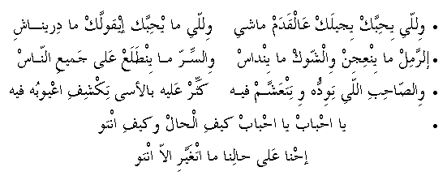

* willee yiHibbak yijeelak 'al-qadam maashy
willee mayHibbak eequllak ma direenashy
* ir-ramil ma yin'ijin wish-shoak ma yindaas
wis-sirr ma yintala' 'ala jamee' in-naas
* wiS-SaaHib illy tiwiddoh o tit'ash-sham feeh
kath-thir 'aleeh bil-asa tikshif i'yoobo feeh
* yaHbaab yaHbaab keef el-Haal o keef into
iHna 'ala Haalina matghayyar illa into
* The one who likes you will walk [to your wedding]
And the one who dislikes you will tell you he didn't know
* Sand is not to be made into dough and thorns are not to step on
And a secret is not to be told to all people
* The friend who you like and have hopes for
Put some pressure on him and you will find his bad side
* O, loved ones, how are you?
We are the same, but you have changed
Go
back to Palestinian Songs Page
Go back
to Palestinian Folklore Page